Lucas Wills | LinkedIn: lucas-wills | Email: lucasbwills@gmail.com | Discord: lucas_ww
In early 2024 while working on other radio-frequency projects, I came across this video by channel jmartis2 showing a solid-state tesla coil operating at much higher frequencies than usual, which usually produces flame-like discharges, however by running in interrupted high-power pulses very interesting effects are achieved, where the arcs appear as trees with wispy curled tips. The video tells that it is operating at 7MHz, using SiC FETS and PLL giving a starting point but gives little other information. I was interested in reproducing this project and tried to reach out for more info on how it was done, but never heard back. So, this ended up being a project designed from scratch.
So, I needed to design a Tesla coil to run at >7MHz, and to be able to be inturrupted quickly, so it must be able to quickly start and stop. Switching at frequencies this high make it absolutely critical to minimize switching losses, and for this reason solid-state Tesla coils operating above a few megahertz typically use a class-E switching topology which achieves zero voltage turn-off, and zero voltage and current turn-on if tuned perfect. This works quite well, but there is an issue with using the standard class-E topology for this particular project.
Lets first take a look at a normal class-E switching example. I threw together a basic simulation of a class-E inverter and the gate and drain waveforms of the switching device are shown. Notice that the voltage is zero as the switch is turned off, and both voltage and dV/dt are zero when turning on. This is how class-E eliminates almost all switching loss achieving extremely high efficiency. When used in a tesla coil setting, L2 and R1 are replaced by the primary coil and the coupled secondary coil which provides the load.
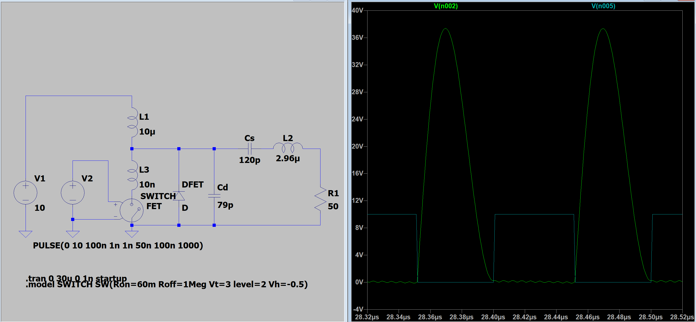
But, this topology requires a constant current source in the form of the choke L1. This is problematic for this project because of the need to rapidly turn the coil on and off to operate in repeated bursts. When the coil is cut off, there will still be energy stored in L1 and that energy needs somewhere to go. In our case, that would end up causing a voltage spike on the MOSFET drain, and the energy would be dissipated through avalanche breakdown of the MOSFET. Consider our choke is 10μH, and is reaching 50A of current. This gives us 12.5mJ of energy, which when interrupting at 1kHz would give us 12.5W of extra power dissipation in our MOSFET! Additionally, MOSFETs are typically built to handle some amount of avalanche breakdown, but repeating this process several thousand times every second may rapidly damage our MOSFET.
If only there were a way to achieve class-E switching with a constant voltage source instead of constant current...
Well it turns out, there is! Consider that the primary coil of our Tesla coil is not actually a pure inductor, but rather it is coupled to a secondary resonant circuit featuring inductance, capacitance and a significant resistance. This means that our primary coil will already basically act as a damped resonant circuit on its own, so Cs, L2 and R1 can be removed! This allows us to then place the primary coil where the choke (previously L1) was, and the choke can be left out with the only disadvantage to switching being slightly higher dV/dt initially. This is not a concern for these frequencies. The simplified class-E circuit is shown below, with waveforms just as good as before!
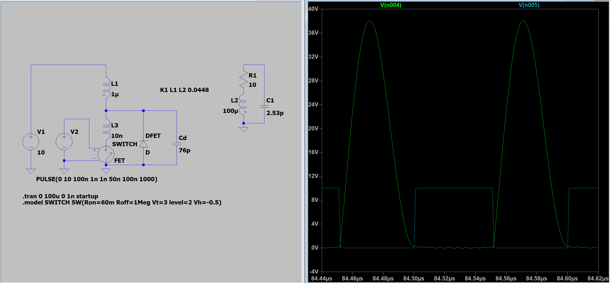
There is one unfortunate downside to this change, which is that the primary coil no longer has a series resonant capacitor to cancel out its impedance. This means that to get the highest primary currents and by extention, the highest power, we will need to use as few turns as possible on the primary. Because of the short on-times planned, in practice this means we will use one turn.
Now, why PLL? Well, PLL or 'Phase-Locked Loop' control allows us to lock the output of the gate drivers to the same frequency as our feedback, while being able to tune the exact difference in phase angle between them. So what phase angle are we looking for? Well, the easiest way to take feedback is with a current transformer on the bottom of the secondary coil. Simulation tells us that, when accounting for delays present in detecting the feedback signal, our gate drive signal is close to being in phase with the feedback signal.
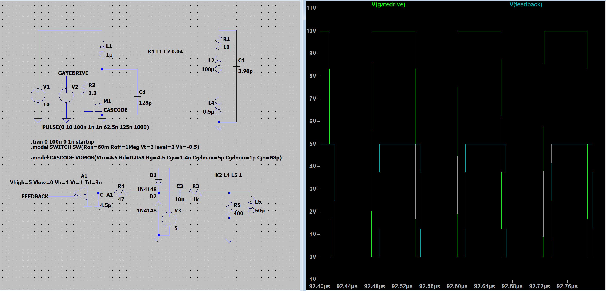
The 74HC4046AD chip chosen for PLL control has 3 phase comparator options. For maintaining a phase angle near zero, typically phase comparator 2 would be used, however PC2 struggles to work properly when the input frequencies are closely locked together, as they are in this case. For this reason, PC2 has a reputation of being unstable in this application. I chose to use PC1 instead for this reason, it is the simplest and shown to be the most stable in SSTC operation. PC1 however, can only maintain a range from 0° to 180°, so we would have to operate at the very edge of its range in this case. To avoid this and put our target phase angle in the center of this range for the best stability, I changed the current transformer shunt to be a pure capacitance instead of a resistor. This causes a voltage phase lag of 90°, placing our target phase angle right in the middle of PC1's range. Of course, in reality there is some resistive component from the capacitor and the feedback circuitry so the phase lag will be a little less than 90°, but this difference can be tuned out by adjusting the VCO range in the PLL.
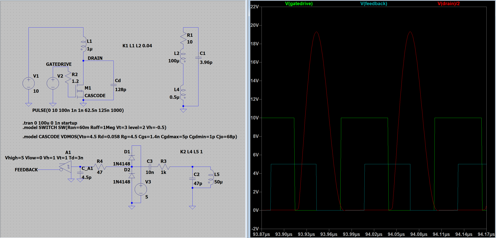
So, now that's how the PLL is going to work. Next, how are we going to drive a power MOSFET at >7MHz? Well first, we have to chose a sufficiently fast high voltage MOSFET with a low on-resistance, high current capability and low input and output capacitance. Input capacitance must be low so it can be driven at megahertz frequencies without massive gate drive power, and output capacitance must be low so that the resonant circuit has a sufficient Q for the drain voltage to be pulled back to zero before turning back on. For these reasons, SiC FETs are the best choice. For ease of driving, I chose a SiC cascode device from Onsemi, UJ4C075060K4S.
So, let's take a look at our chosen device's characteristics. First, I want to take a look at gate drive voltage. If we take a look at the drain current versus voltage curve, we can see that it has been characterized up to 15V. The improvement from 8V to 15V is very minor, so we primarily need to worry about rise time from zero to 8V. To get slightly better switching characteristics, we will drive the gate slightly below zero volts. This can be done very easily by coupling the gate drive signal through a capacitor with a small negative voltage bias, maintained using the forward voltage drop of some diodes.
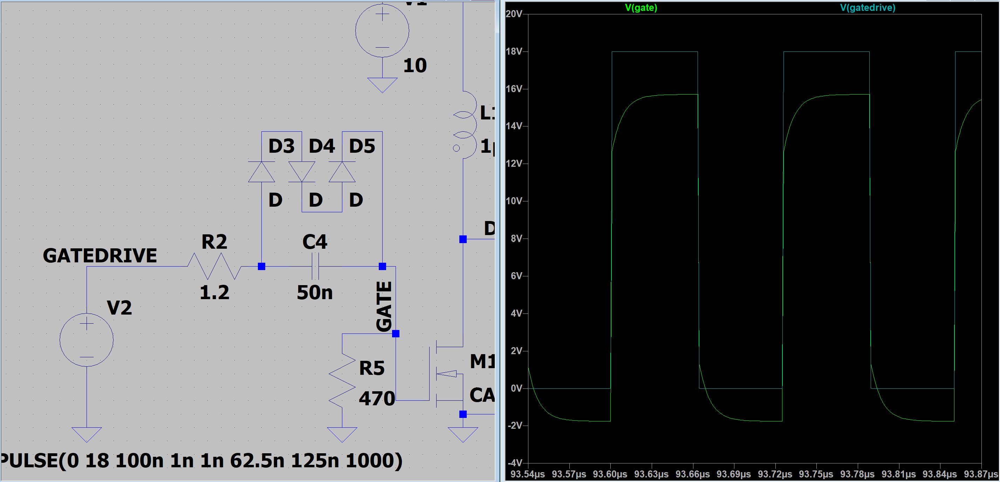
There is a limited number of gate driver chips characterized at these frequencies. I had used UCC27524 at similar frequencies before with good results, so I chose to use these again. They are rated for a continuous current of 0.3A and peak current of 5A, and our simulation says we will have an RMS current of 770mA and peak current of 3A. The coil is only running for short pulses so 2 of these chips in parallel should be sufficient to provide 770mA without overheating, although if high reliability was desired I would chose to put at least 3. To balance current, each gate drive channel will have their own gate resistor, each 4.7Ω for a total resistance of 1.2Ω. The gate drivers do have a meaningful propagation delay, however by sampling the VCO output after the gate drivers instead of directly from the VCO, this propagation delay can be ignored.
So, that brings us to the schematic. There are a few things worth pointing out. Notice how many capacitors are on the FET drain, this is for tuning purposes, so I can have a large spot on the board to add and remove capacitors of various values. R4 and D5 force the VCO to start at the top of its frequency range before locking, which is beneficial for startup stability. Test points have been added for ease of scoping. It's important to have good low-inductance scoping points for tuning class-E. D9 is not necessary, but will avoid problems if C24 and C25 somehow become charged in the wrong direction. An appropriately chosen ferrite bead helps isolate noise between the logic and gate drive supplies.
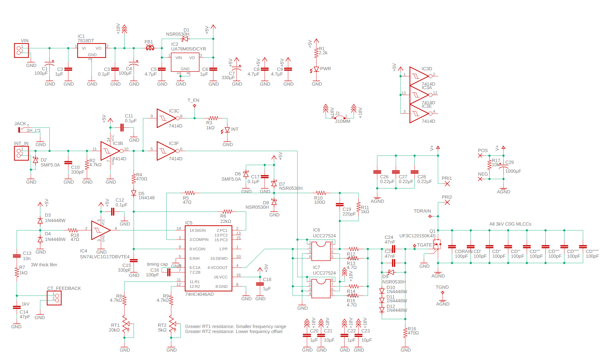
Next, the board layout. At these frequencies, local low-impedance decoupling is absolutely critical for all of the chips. 1μF 0805 capacitors are excellent for this, providing lower impedance than an array of different value capacitors as the capacitor size is ultimately much more important than the exact value. Higher capacitance will have a lower ESR with similar inductance. For the gate drivers, larger 10μF capacitors placed farther away can supply the higher current spikes necessary. The gate drive output going from the drivers to the FET is kept short and thick, and is routed above a dedicated ground plane on the other side of the board for minimal trace inductance. All trace inductance is also reduced by using a 1.2mm thick PCB instead of the standard 1.6mm. RF current capability of the power section is improved by using identical traces on both sides of the board and using via stitching.
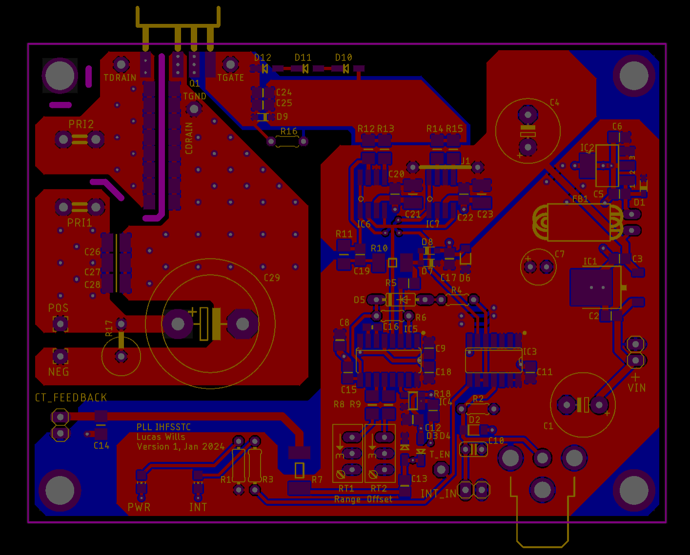
These boards were then purchased, assembled and tested. Prior to assembly, a few component values were changed. These are shown in the final schematic below. For the current transformer, a Ni-Zn ferrite was chosen as they have much lower losses and superior magnetic properties to other ferrites in the megahertz range. I tested 2 Ni-Zn beads intended for noise suppression, part numbers ESD-R-16C and CST16/7.9/14-4S2. I found no difference between the performance of the two in this circuit, so the smaller one was chosen. One issue was found in initial testing, where the PLL would sometimes get trapped at the upper end of its VCO frequency range where it was forced to start. A simple fix for this was to limit it at a slightly lower frequency using a 4V zener diode, except I didn't have any zeners of appropriate voltage for this on hand, so I used 2 high voltage diodes in series to create a 4V forward voltage drop. This was a bit ugly, but worked just fine.
All of the SMD parts were soldered using a hot air station and lead-free solder.
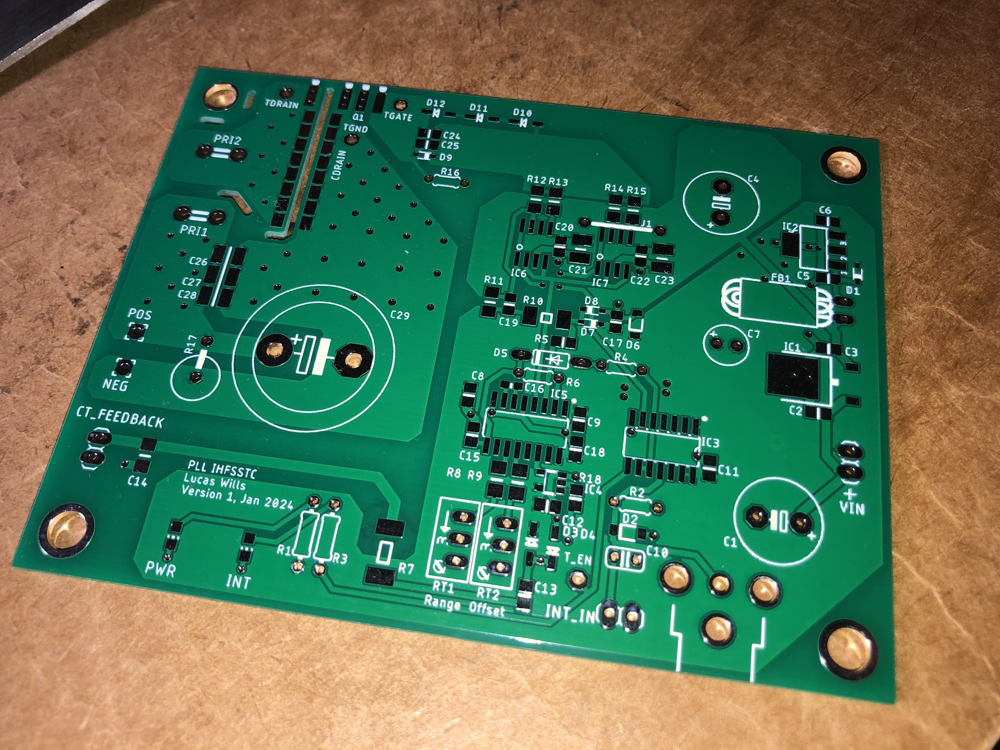
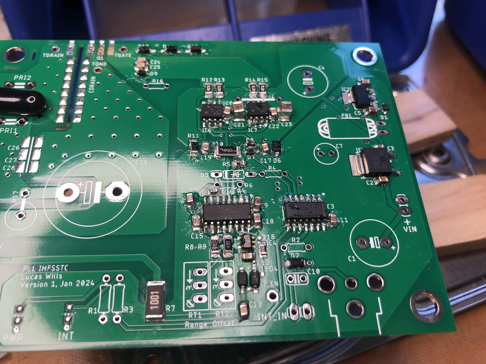
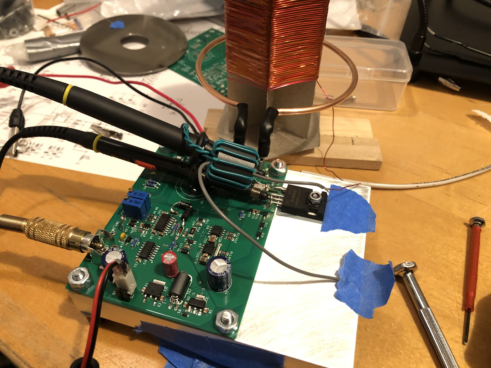
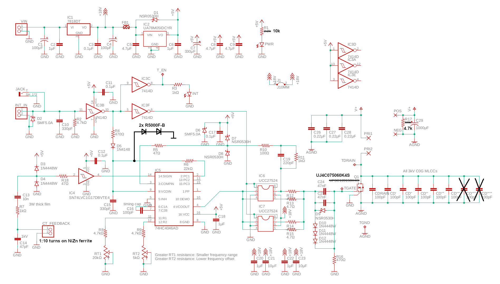
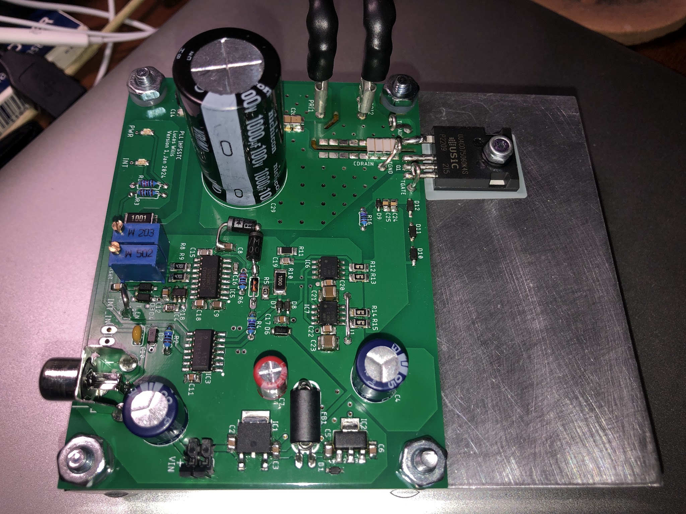
For the primary coil, I used a single turn of 3.5mm copper tube. The secondary was wound with what I believe was 28 AWG magnet wire on a pill bottle, and given a topload which was another loop of 3.5mm copper tube. It is important that this loop isn't closed, otherwise it will have a current induced in it and waste power. Then, everything was put together on a little wood board, and ready to tune and run!
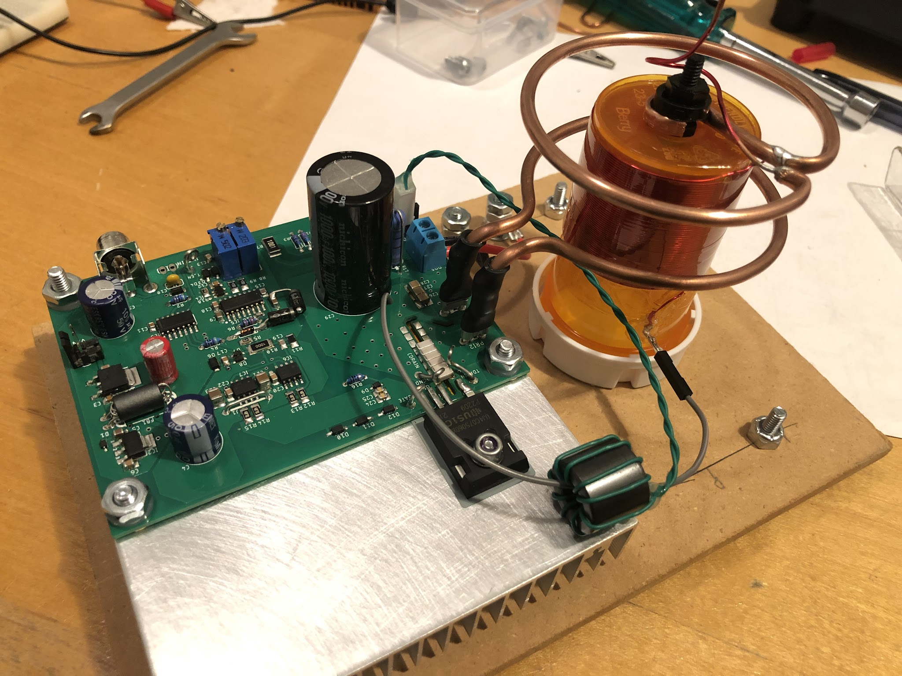
The simplified class-E circuit does unfortunately leave us with less options for tuning. Because we only want to use one turn on the primary, that pretty much just leaves us with two easy options for tuning, being the drain capacitance and the coupling of the primary to the resonator. Below is a few images that should demonstrate how I tuned the circuit.
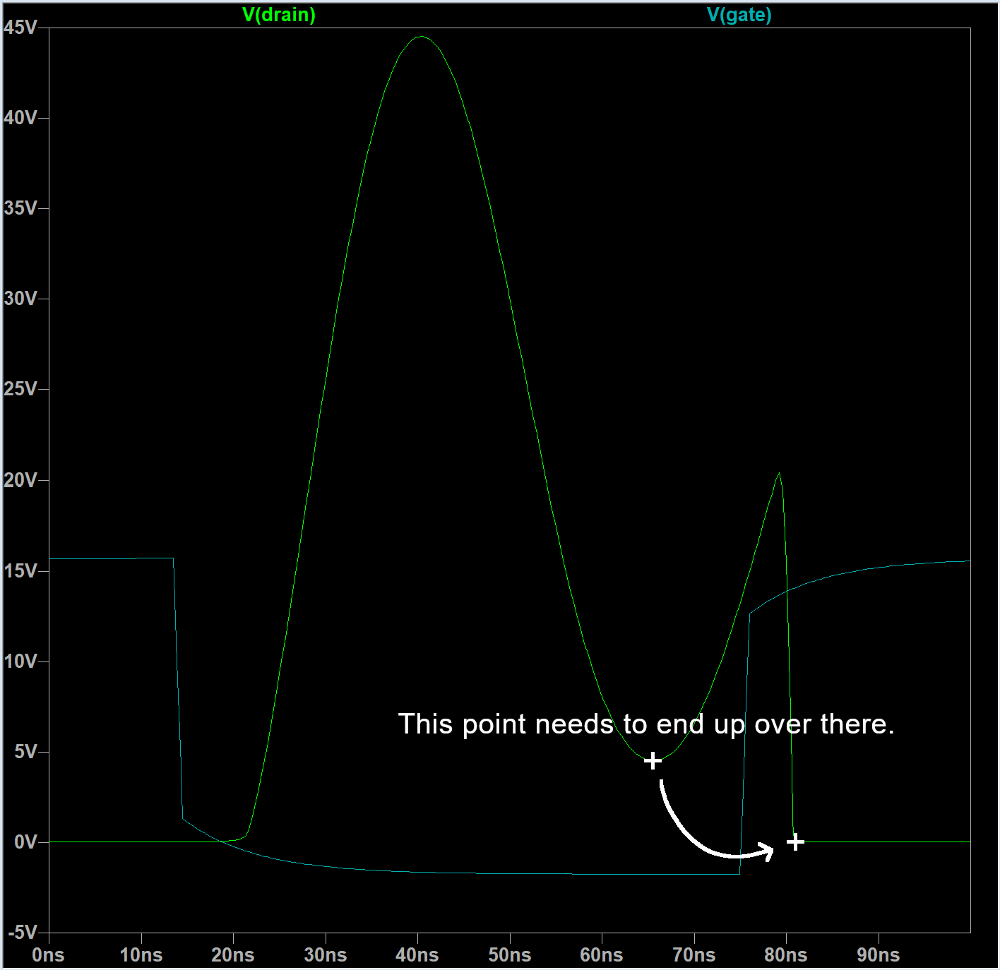
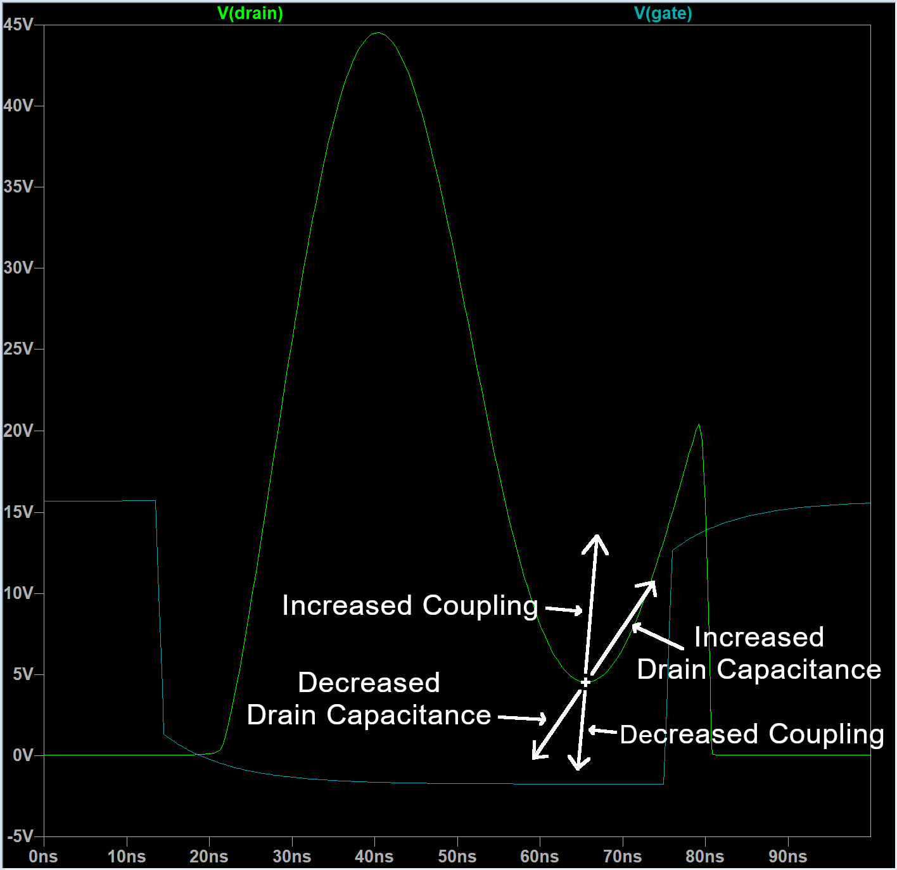
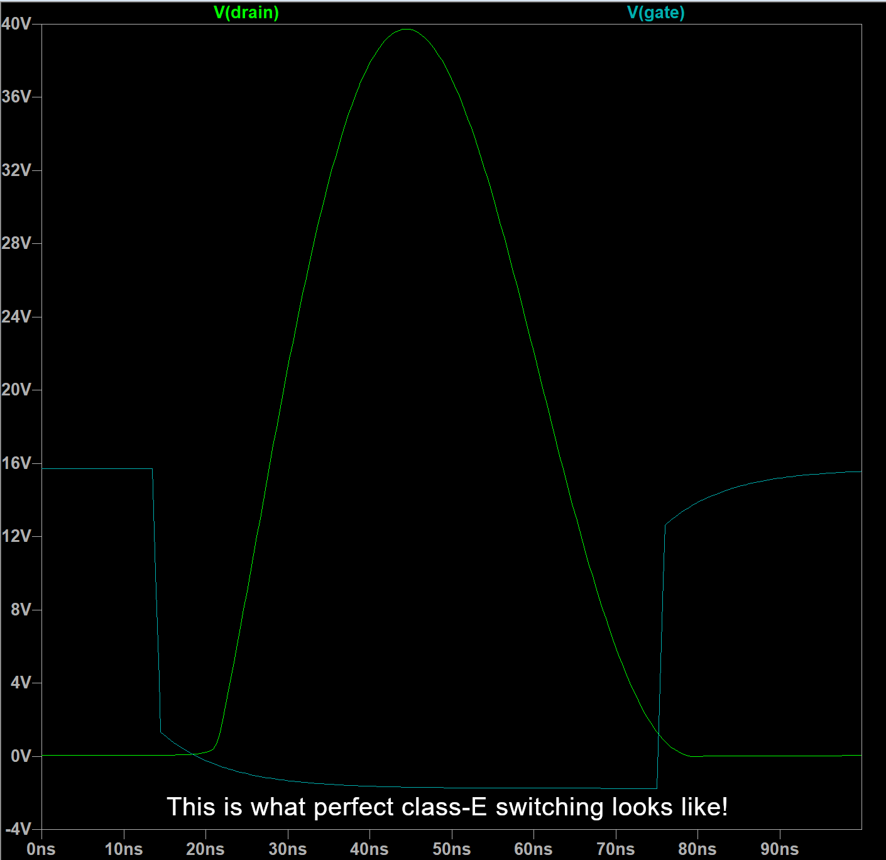
And here's the finished device, running with 60V input!
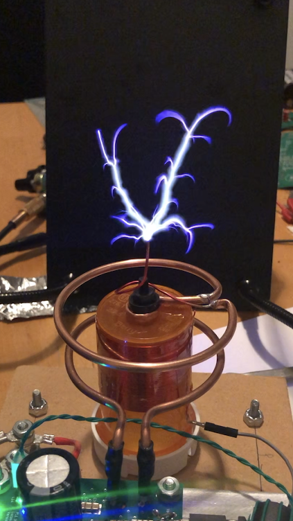
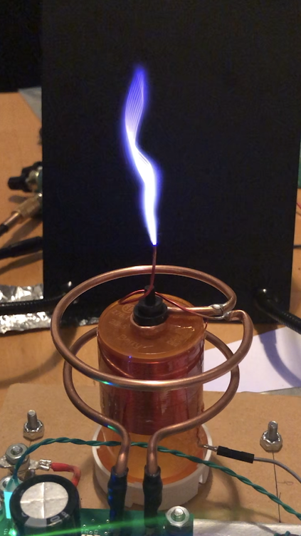